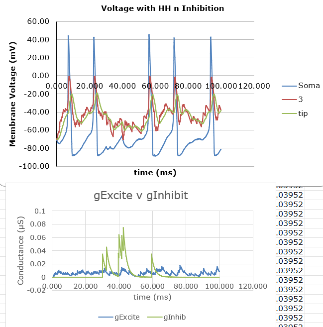
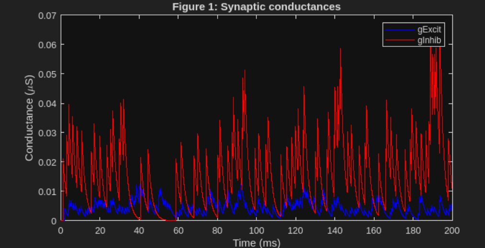
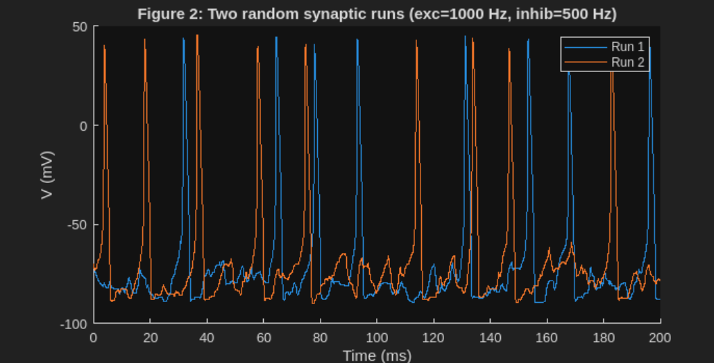

Neural Modeling
Computational neuroscience project modeling action potential generation and synaptic integration using a two-stage Excel → MATLAB workflow.
Project Overview
This project investigates how synaptic input and membrane properties influence action potential generation in neuron models. A two-stage modeling workflow was used: the governing equations were first constructed and validated in Excel, then translated into MATLAB for scalable simulation and analysis.
This approach ensured numerical correctness and conceptual clarity before implementing the model programmatically.
Initial Model Development in Excel
Excel was used as the initial modeling environment to construct and validate the action potential dynamics using explicit timestep calculations. Spreadsheet-based modeling allowed each term in the voltage update equation to be examined independently.
- Each timestep was computed explicitly in Excel using forward-Euler integration.
- Separate columns were used for leak, excitatory, and inhibitory conductances.
- Excel plots verified correct action potential shape, timing, and amplitude.
- Plots were generated using delta time = 0.05 over 100 seconds.

Translation and Simulation in MATLAB
After validating the model in Excel, the equations were translated directly into MATLAB and implemented programmatically. MATLAB enabled efficient simulation, automation, and stochastic input generation.
- Excel-validated equations were translated line-by-line into MATLAB.
- Hodgkin–Huxley sodium and potassium channel dynamics were included.
- MATLAB simulations produced voltage traces, conductances, and firing rates.


The simulations demonstrate how synaptic input is filtered by membrane properties and how excitation can trigger spikes even when average input remains subthreshold.